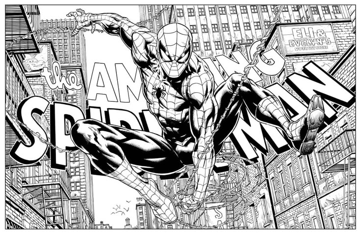

Spider-Man: A Symbol of Hope, Relentlessness, and Humility
Spider-Man, one of the most iconic superheroes in history, has embodied hope, determination, and humility since his debut in Amazing Fantasy #15 (1962). Created by Stan Lee and Steve Ditko, Peter Parker’s journey from an ordinary teenager to a selfless hero makes him a relatable and inspiring figure.
What Spider-Man Has Done
- Defended New York City Relentlessly – From battling small-time criminals to world-threatening villains like Green Goblin, Doctor Octopus, and Venom, Spider-Man has never wavered in his duty to protect the innocent.
- Sacrificed Personal Happiness for Others – Despite losing his Uncle Ben and later experiencing the deaths of loved ones like Gwen Stacy, Peter Parker continues to put his responsibilities as Spider-Man above his personal desires.
- Overcame Countless Setbacks – Whether dealing with financial struggles, social alienation, or the consequences of his double life, he never gives up.
- Fought Alongside Other Heroes – As a key member of teams like the Avengers and the Fantastic Four, he brings heart, humor, and a grounded perspective to larger-than-life conflicts.
- Inspired Others to Rise – Characters like Miles Morales and Spider-Gwen have taken up the mantle, proving that Spider-Man's ideals transcend just one person.
Why He Represents Hope, Relentlessness, and Humility
- Hope: No matter how dark things get, Spider-Man keeps pushing forward, proving that even the most ordinary person can make a difference.
- Relentlessness: He has been beaten, broken, and emotionally shattered but always gets back up, living by the mantra: "With great power comes great responsibility."
- Humility: Unlike many heroes, Peter doesn’t seek fame or fortune. He struggles, makes mistakes, and learns, staying grounded despite his extraordinary abilities.
"We have to be greater than what we suffer"- Peter Parker
If have time read more about spiderman here